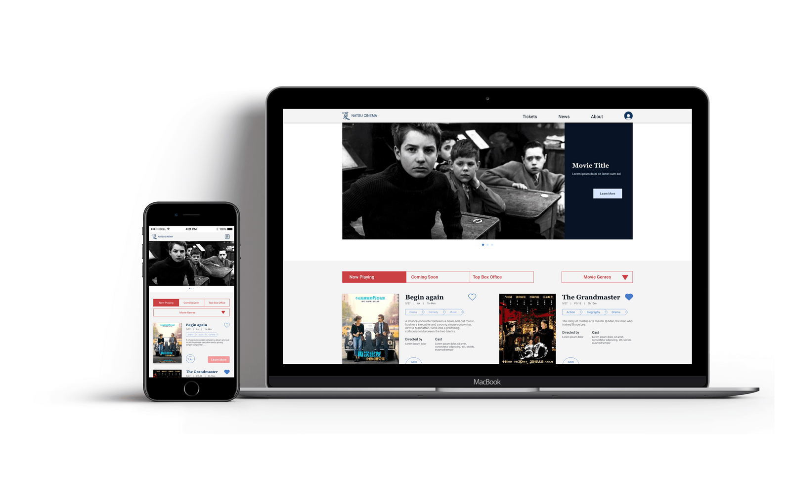
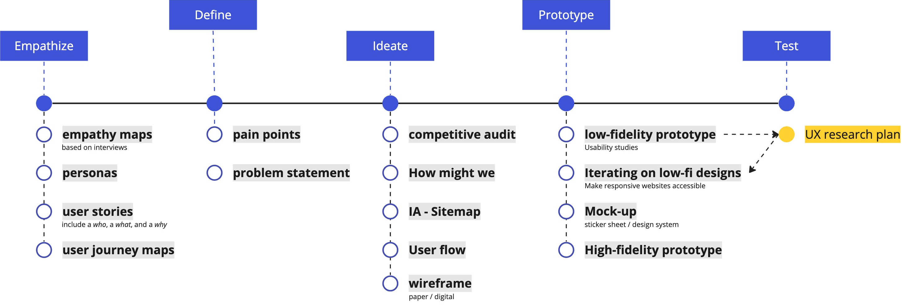

RWD Movie Ticketing Website
UX Design - Google UX Design CertificateTool Used
Project background
I create an RWD movie ticketing website for Natsu Cinema that allow users to browse smoothly in different devices and complete their order in advance without queuing up to get tickets.

-
The Problem
It’s a waste of time to waiting in long queues to get tickets and refreshment. Sometimes couldn’t take an ideal seat.
-
The Goal
It’s a waste of time to waiting in long queues to get tickets and refreshment. Sometimes couldn’t take an ideal seat.
-
The Goal
It’s a waste of time to waiting in long queues to get tickets and refreshment. Sometimes couldn’t take an ideal seat.
-
Design process
